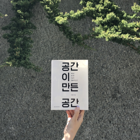
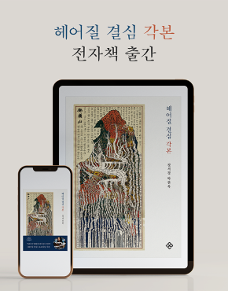

1945년(을유년) 12월 1일
광복의 감격과 의의를 기리며 ‘출판은 곧 건국 사업’이라는
사명감으로 첫발을 내디딘 을유문화사는
한국 현대사와 궤軌를 같이하며 한국 출판의 기틀을 다져 왔습니다.
한국 현대사와 궤軌를 같이하며
한국 출판의 기틀을 다져 왔습니다.
책
을유문화사에서
발간한 도서목록입니다.
-
 헤어질 결심 각본
박찬욱,정서경
<헤어질 결심>의 오리지널 각본,
영화에서 만나지 못한 순간들과 마주하다
헤어질 결심 각본
박찬욱,정서경
<헤어질 결심>의 오리지널 각본,
영화에서 만나지 못한 순간들과 마주하다
- 포지셔닝 (40주년 기념 스페셜 에디션) 잭 트라우트,앨 리스 ,안진환 두 명의 마케팅 전문가가 전 세계에 전파한 획기적인 커뮤니케이션 전략 ‘포지셔닝’
- 테슬라 모터스 찰스 모리스 ,엄성수 “한 번 시승하면 잊을 수 없는 자동차” 21세기 가장 주목받는 스타트업 테슬라의 성공 비결
-
 공간이 만든 공간
유현준
이 책은 건축을 중심으로 교류, 결합, 변종이 만들어 낸 문화에 진화의 이야기
공간이 만든 공간
유현준
이 책은 건축을 중심으로 교류, 결합, 변종이 만들어 낸 문화에 진화의 이야기
-
 블록체인 혁명
돈 탭스콧,알렉스 탭스콧 ,박지훈
최신 연구 성과를 반영한 서문이 추가 수록된 블록체인 분야의 바이블
블록체인 혁명
돈 탭스콧,알렉스 탭스콧 ,박지훈
최신 연구 성과를 반영한 서문이 추가 수록된 블록체인 분야의 바이블
-
 이기적 유전자 40주년 기념판
리처드 도킨스 ,홍영남,이상임
새로운 디자인으로 다시 태어난 세계적 베스트셀러
이기적 유전자 40주년 기념판
리처드 도킨스 ,홍영남,이상임
새로운 디자인으로 다시 태어난 세계적 베스트셀러
을유인터뷰

『보이지 않는 도시』 저자
건축가 임우진
Q. 여행을 좋아한다고 하셨는데,
도시 여행할 때 가장 먼저 보는 풍경이나
놓치지 않고 확인하는 공간이 있을까요?
저는 처음 도시에 도착하면 숙소에 짐을 풀고
바로 그 도시의 중앙시장에 먼저 들릅니다.
시장에서 그 시민들의 식문화, 그들이 좋아하는 색과 향기,
사람들의 성향과 인심 같은 것이 가장 잘 보여요.
모두가 그곳에서 행복하기 때문에 그 모습이 더 두드러지죠.
그리고 아무도 일어나지 않은 새벽에는 혼자 동네 곳곳을 걸어보곤 합니다.
주로 미화원이나 배달부 정도만 보이는 그때가 도시의 가장 원초적이고
아름다운 순간을 볼 수 있는 시간이기도 해요.
또한 대중교통으로 갈 수 있는 거리라면 묘지를 꼭 들르는 편이에요.
그 도시의 죽음에 대한 태도를 보면
의외로 그곳의 건축과 문화가 잘 보입니다.
소식
- 을유1945 서체가 <미술이 문학을 만났을 때> 에 사용되었습니다. 국립현대미술관 덕수궁에서 5월 30일까지 <미술이 문학을 만났을 때> 전시가 진행됩니다. 이 전시는 1930-1950년대 문학과 미술의 깊은 관계를 조명한 대규모 기획전입니다.
-  세종도서 교양부문에 『공간이 만든 공간』이 선정되었습니다.. 저자 유현준은 평소 전공 분야 도서가 아닌 타 분야 도서를 주로 읽는다. 그리고 타 분야의 사람들이나 자신과 다른 생각을 가진 사람들과 이야기하는 것을 좋아한다.
-  『헤어질 결심 각본』 전자책이 출간되었습니다. 영화 각본이 선사하는 즐거움 중 하나는 촬영과 편집을 마친 최종 결과물과의 차이를 발견하는 것이다. 『헤어질 결심 각본』은 특히 이런 발견의 즐거움을 풍부하게 담고 있다.
- 4월 추천도서 『아주 편안한 죽음』이 선정되었습니다. "세계적인 지성인도 아니고 위대한 작가도 아닌데, 책장을 넘기면 넘길수록 이 ‘엄마’는 나의 엄마, 우리의 엄마를 닮은 것 같다. 이제 알겠다.
- 독서인 독서칼럼에 『너의 표정』이 소개되었습니다. 사진을 감상한다는 것과 사진책을 감상한다는 것은 다른 일이다. 책의 경험은 또다른 총체적인 감각의 경험이다.
- 『공간의 미래』 교보문고 리커버 출간 기념 팬사인회가 열립니다. 3월 3일 목요일 7시, 교보문고 유튜브에서 『공간의 미래』 리커버 출간을 기념하여 유현준 작가의 랜선 팬사인회가 열립니다. 방송 중 책을 구매하시면 작가가 직접 사인한 도서를 보내 드립니다.
- 『공간의 미래』 10만 부 출간 기념 북토크 『공간의 미래』 10만 부 출간을 기념하여 유현준건축사사무소 2층에서 북토크를 합니다. 인문 건축가 유현준이 말하는 가까운 미래의 공간, 『공간의 미래』에 꾸준한 관심과 사랑을 주셔서 감사합니다.
- 『이기적 유전자』 한정판 예스리커버 출간! "한 권의 책 때문에 인생관이 하루아침에 뒤바뀌는 경험을 한 적이 있는가? 내게는 『이기적 유전자』가 바로 그런 책이다"